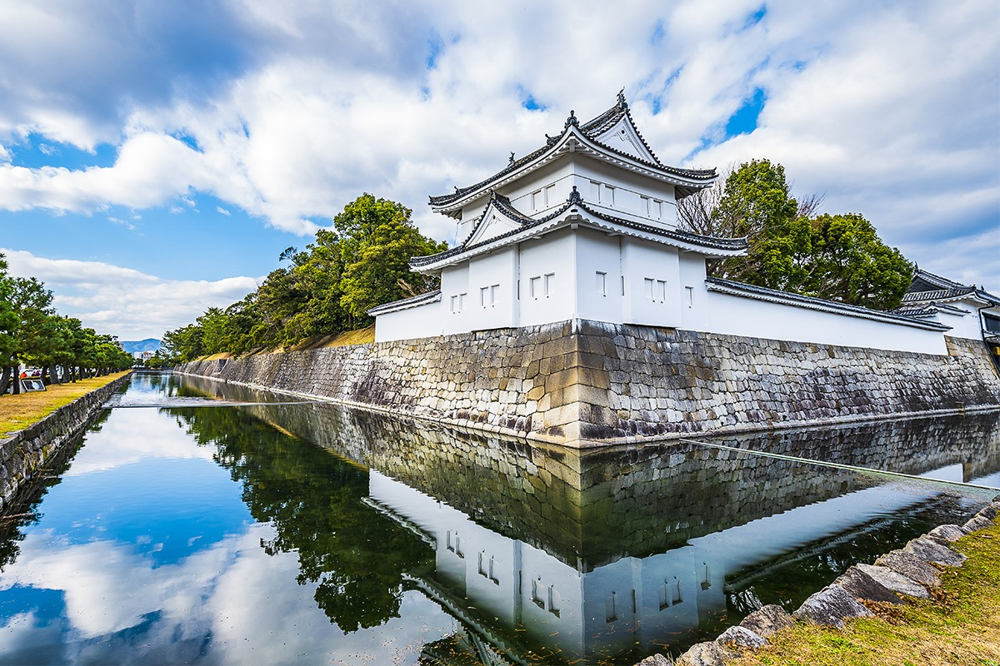
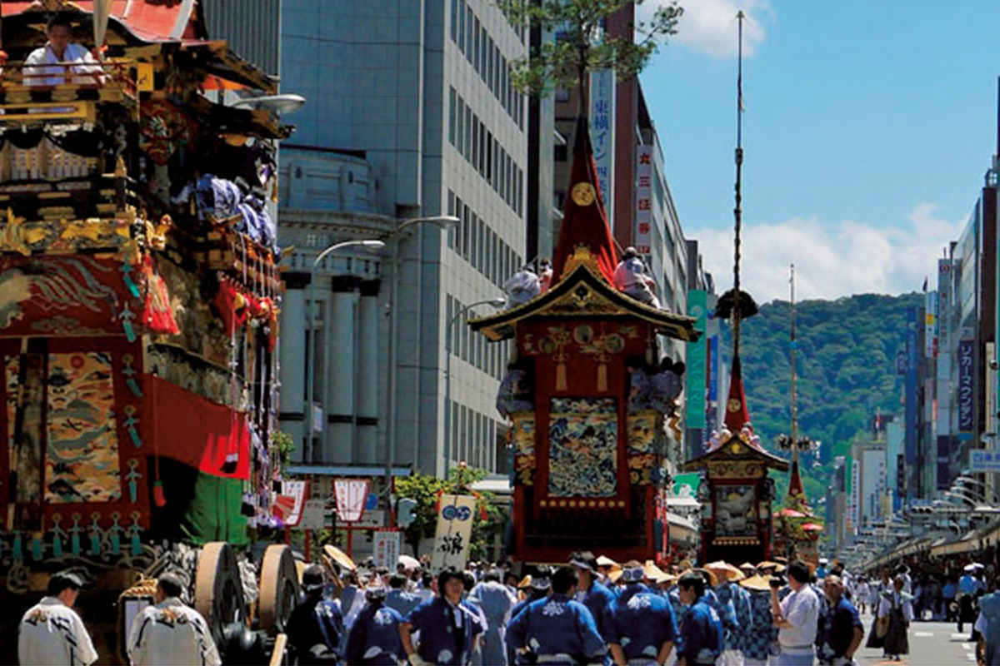
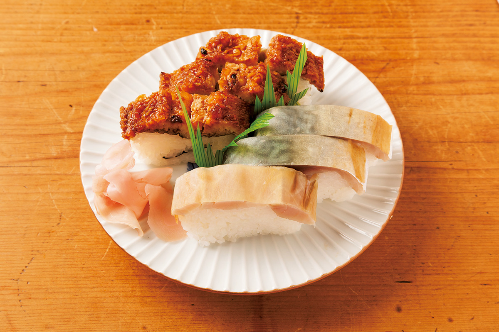
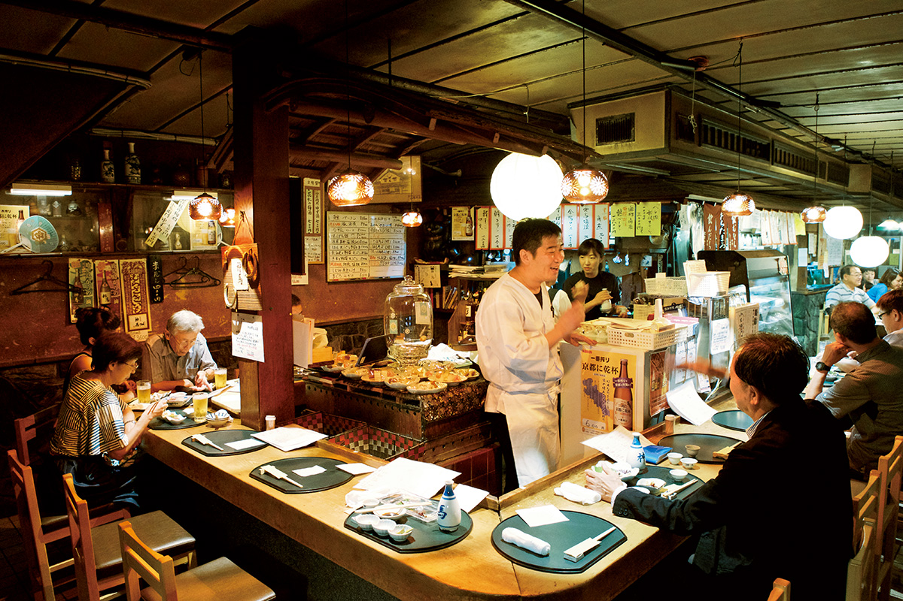
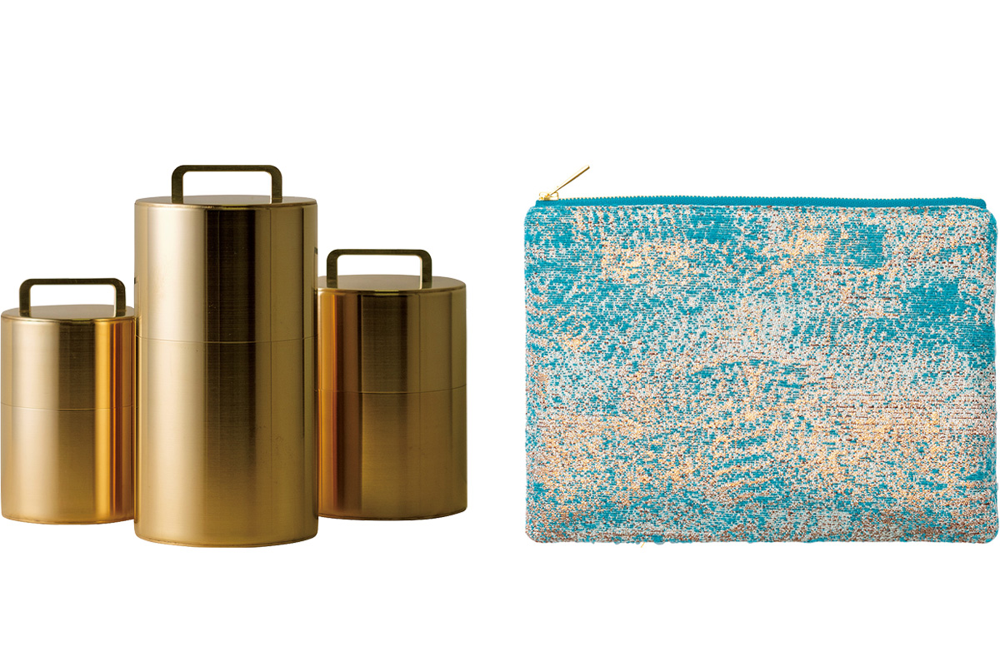
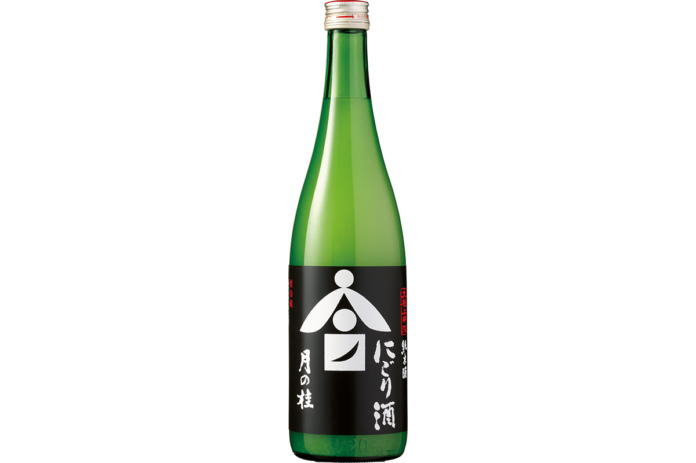
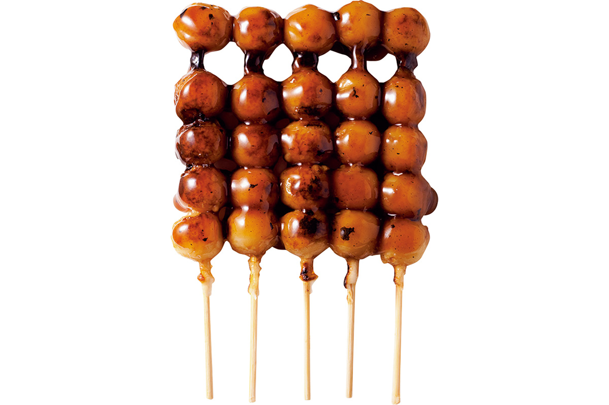
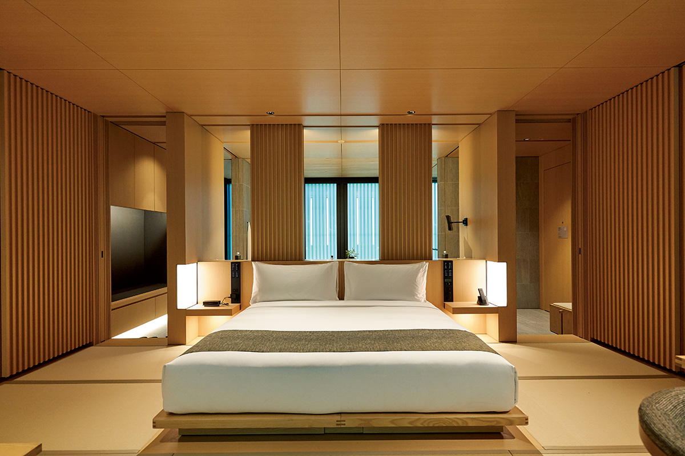

Префектура Киото
Киото: тысяча лет столицы, ужин в старом доме и ночь в лесу

Белый замок с изогнутыми крышами стоит за рвом, его стены и облака видны в спокойной воде.
Больше тысячи лет этот город был столицей, а теперь сюда приходят первые в стране люксовые отели. Рассказываем, что смотреть в Киото и что попробовать: от саба-суши до мутного сакэ из Киото.
О префектуре
Тысяча лет столицы и два разных севера с югом
Префектуру образуют старые области Танго, часть Тамбы и Ямасиро. Она вытянута с севера на юг: на севере выходит к Японскому морю, где лежат залив Майдзуру с изрезанным берегом и Аманохасидатэ, один из трёх знаменитых видов страны.
Юг занят тем Киото, который знают все: объекты всемирного наследия, старые кварталы и храмы, где каждая постройка имеет свой возраст и своё имя. Север и юг показывают совершенно разные лица, и на поездку стоит закладывать оба.
В 794 году столицу перенесли в Хэйан-кё, и до 1869 года, когда император переехал в Токио, город оставался центром страны больше тысячи лет. В последние годы здесь один за другим открываются люксовые отели, жильё, где путешественник попадает в повседневность Киото, и торговые комплексы. Герб префектуры решён в виде шестилепесткового знака с иероглифом «Кё» в центре.
Что посмотреть
Дворец, где жили императоры
Киотский императорский дворец
Дворец занимает центральную и северную часть Киотского императорского парка. Это прежняя резиденция императоров, и здесь собраны постройки, по которым читают историю города: зал Сисин-дэн, где проходили восхождения на престол, зал Сэйрё-дэн и малый дворец Огосё.
- Справки
- отдел осмотра управления императорского двора в Киото
- Адрес
- 3 Kyoto Gyoen, Kamigyo-ku, Kyoto
- Телефон
- +81 75-211-1215
Что ещё посмотреть
- Арасияма, бамбуковая роща и мост через реку
- Храм Киёмидзу, деревянная галерея над склоном
- Замок Нидзё, дворец и сад в центре города
Праздники
Месяц процессий с повозками
Гион-мацури
Этот праздник длится почти весь июль и состоит из череды обрядов, но главное в нём, конечно, шествие повозок: каждая улица выводит свою, украшенную резьбой, тканями и фигурами. Смотреть на это собираются целыми кварталами, а самые старые повозки хранят как реликвии.

- Период
- ежегодно в июле
- Место
- город Киото, святилище Ясака и улицы вокруг
Другие праздники
- Аой-мацури, весеннее шествие в старинных костюмах
- Огни на пяти горах, летнее зажжение огней на склонах
- Дзидай-мацури, осенняя процессия в одежде разных эпох
Музеи и архитектура
Замок, видевший две эпохи
Замок Нидзё
Замок пережил и возвышение, и падение дома Токугава, династии сёгунов, которая правила Японией с 1603 по 1868 год. Дворец Ниномару с залом для приёмов, сад Ниномару и резные ворота Карамон сохранили культуру Момояма во всей её пышности, и именно ради этих интерьеров сюда идут в первую очередь.
- Адрес
- 541 Nijojo-cho, Nakagyo-ku, Kyoto
- Телефон
- +81 75-841-0096
Что ещё посмотреть
- Национальный музей современного искусства, искусство XX века у канала
- Кинкакудзи, золотой павильон над прудом
- Святилище Хэйан, широкий двор и ворота с арками
Местная кухня
Скумбрия под водорослью
Саба-суши
Скумбрию солят, потом маринуют в уксусе и кладут на рисовую основу, а сверху накрывают тонким листом водоросли комбу. Блюдо придумали, чтобы рыба дольше хранилась, и раньше для него брали скумбрию, которую привозили в город по старой дороге.

Что ещё попробовать
- Тиримэн-сандзё, мелкая сушёная рыба с перцем
- Чайная соба, лапша с зелёным чаем
- Сиба-дзукэ, солёные овощи по-киотски
Где поесть
Идзакая, открытая с тридцать четвёртого
Идзакая «Синмэ»
Заведение работает с 1934 года и каждый день берёт продукты на рынке, поэтому меню меняется вместе с рынком. К еде подают собственное сакэ: смесь шести сортов, которую здесь составили для себя.

- Адрес
- 38 Tamaya-cho, Senbon-dori Nakadachiuri, Kamigyo-ku, Kyoto
- Телефон
- +81 75-461-3635
- Часы
- с 17:00 до 21:30
- Выходные
- воскресенье
- Сайт
- shinme-kyoto.jp
Ремёсла
Проект для старого ремесла
Проект «Гоу он»
Это совместная работа старого текстильного дома и мастерской Кайкадо: они ищут новые возможности для традиционного ремесла и заказывают мастерам вещи, которых в обычном наборе не бывает. Часть изделий делают по старым формам, часть по новым чертежам.

- Сайт
- hosoo.co.jp
- Сайт Кайкадо
- kaikado.jp
Что привезти
Сакэ, мутное как молоко
Сакэ «Цуки-но-кацура»
Это мутное сакэ с фруктовым ароматом и свежей кислинкой: рис здесь полируют, но не фильтруют напиток до прозрачности, поэтому во вкусе остаётся мягкость. Бутылка 720 миллилитров стоит 1870 иен.

- Телефон
- 0120-333-632
Данго «Камо-митараси»
Пять колобков на одной бамбуковой шпажке обжаривают и поливают сладким соусом, а форму им придают по образцу пузырьков, которые бьют из дна пруда Митараси у святилища Симогамо. Набор из пяти шпажек на вынос стоит 650 иен.

- Телефон
- +81 75-791-1652
Где остановиться
Двадцать шесть комнат в лесу
Аман Киото
Гостиница открылась в 2019 году и заняла обширный участок среди леса: корпуса с номерами спрятаны в деревьях, поэтому город остаётся где-то далеко за склоном. Здесь же устроены горячие ванны с водой собственного источника.

- Адрес
- 1 Okitayama Washimine-cho, Kita-ku, Kyoto
- Телефон
- +81 75-496-1333
- Комнат
- 26
- Цена
- от 118 000 иен за номер с завтраком, налоги не включены, банный сбор отдельно
Местный диалект
Как здесь говорят «очень вкусно»
- эрай ойсиосуэочень вкусно
- хоккори сита вастало спокойно на душе
- вараэтэ нани мо дэкихинсмеюсь и ничего не могу делать
- ё: фурахаримасу наачасто идёт дождь
Рекорды
В чём Киото первый
- №1 число построек, отнесённых к важным культурным ценностям: первое место
- №1 число живописных мест: первое место
- №1 высота деревянной постройки: пятиярусная пагода храма Тодзи
Вопросы и ответы
Что ещё спрашивают о Киото
В чём разница между «Ойдэясу» и «Окосиясу»?
Смысл у обоих один: добро пожаловать. Но говорят их по-разному в зависимости от гостя: «оидэясу» бросают прохожему или случайному посетителю, а «окосиясу» адресуют тем, кого ждали, постоянным гостям и тем, кто пришёл по записи.
Для чего построили Киотский императорский дворец?
Для жилья императора. Когда в 794 году столицу перенесли в Хэйан-кё, внутри дворцового комплекса поставили внутренние покои дайри, и с них всё началось. Покои горели и отстраивались заново, а своё нынешнее место дворец занимает с 1331 года.
Справочник
Киото в цифрах
Общие сведения
| Административный центр | Киото |
| Муниципалитеты | 15 городов, 10 посёлков, 1 село |
| Площадь | 4612 кв. км |
| Население | 2,59 млн человек |
| Плотность населения | 561,8 человека на кв. км |
| Туристов в год | 85,05 млн |
| Дерево префектуры | криптомерия с гор Китаяма |
| Цветок префектуры | плакучая сакура |
| Птица префектуры | серый буревестник |
Климат
| Средняя температура | +16,9 |
| Максимум | +35,0 |
| Минимум | +0,4 |
| Осадки | 1770 мм |
| Ясных дней | 21 |
| Дождливых дней | 107 |
| Снежных дней | 24 |
Для путешественника
| Онсэнов | 41 |
| Гостиниц и рёканов | 921 |
| Музеев искусств | 41 |
| Музеев | 41 |
| Митиноэки, придорожных станций | 19 |
| Национальное сокровище | главный зал храма Киёмидзу, дворец Ниномару замка Нидзё и другие |
| Важных культурных ценностей | 2188, из них 234 национальных сокровища |
| Исторических мест | 24 |
| Живописных мест | 20 |
| Природных памятников | 16 |
| Всемирное наследие | культурное наследие старого Киото |
| Национальные парки | Санъин-Кайган, залив Вакаса и другие, всего 8 |
Природные памятники
- Кристаллы в Хиэда, редкая порода с крупными кристаллами
- Сосна «Юрю-мацу», старое дерево в саду храма
- Девятиярусная вишня храма Дзёсё-кокудзи, дерево с ярусами цветов
- Ирисы Ота-но-сава, заросли ириса у реки
- Берег Кото-хики, песок, который скрипит под ногами